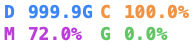
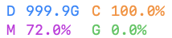
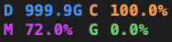
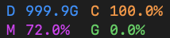
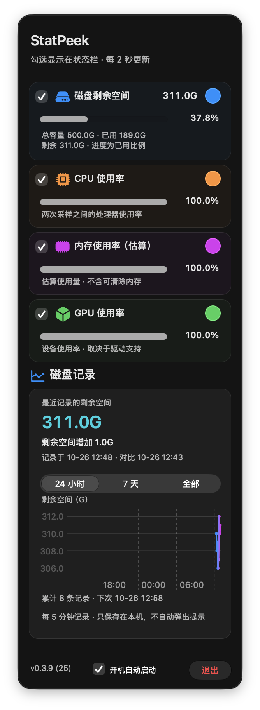

系统原生组件与等宽字体
2026-10-26 · 0.3.9 (21) → 0.3.9 (25) · macOS 27.0.1
Segment 使用系统 automatic / tabs 外观及 capsule 边框，退出按钮直接使用系统 glass 样式。卡片、色点、进度和状态文字分别交给 NSBox、NSColorWell、ProgressView、NSTextField 渲染，不再手绘控件皮肤。
状态栏字体
系统默认字体的 monospaced design，Regular 9 点；两行布局与颜色保留。原生标签预留 cell 内边距，最坏读数占 107 点。以下为原始独立窗口截图；前图由未修改的 Build 21 源码生成夹具，并非重新打包旧 App 或用户桌面截图。
调整前 · Menlo Bold / Core Text · 浅色
调整后 · 系统等宽 Regular / 原生标签 · 浅色
调整前 · 深色
调整后 · 深色
仪表盘
独立非激活窗口，全部为合成数据；原图不加滤镜。这些测试窗口未获取焦点；截图中的系统进度为灰色，代码仍向系统传递所选 tint，颜色与材质交由当前系统绘制。图像未经激活外观的模拟处理。
调整前 · Build 21 调整后 · Build 25
调整后 · Build 25
top / middle / bottom 分别选择 24 小时 / 7 天 / 全部。62 项 XCTest（含 448 帧原生状态栏像素检查）、20 个窗口状态、两个状态栏外观、选色及分层 Esc 各 12 流程、500 次独立原生按钮手势通过。未操作用户桌面鼠标键盘，物理菜单栏点击、macOS 13/Intel 实机及真实重新登录仍未验收。
安装与验证回执 · Apple：Adopting Liquid Glass · AppKit 新设计